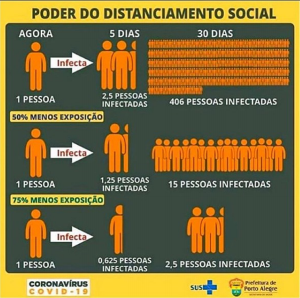

Funções Exponenciais e Logarítmicas
As funções exponenciais e logarítmicas possuem o crescimento exponencial ou decrescimento exponencial, no qual sua função é utilizada em inúmeras situações para, por exemplo, determinar o tamanho de uma população em função do tempo ou o rendimento de um investimento a juros compostos.
Como por exemplo o infográfico abaixo sobre o poder do distanciamento social em meio a pandemia de COVID-19.

E segue abaixo como calculamos a projeção em cada situação.
Situação 1 - sem distanciamento social
Para sabermos da contaminação no 100º dia:
Sabemos que estaremos no 100 / 5 = 20º período de contaminação.
Portanto, assm estabelecemos uam relação entre o período de contaminação x e o número e pessoas f(x) que é descrita pela função:
f(x) = 2,5 x
Vejamos a representação do gráfico para a seguinte situação:
Situação 2 - 50% menos exposição
Aqui, sua taxa de contágio cai pela metade, ou seja, 1,25.
Vejamos a representação do gráfico para a seguinte situação:
Situação 3 - 75% menos exposição
Com 75% menos exposição, a taxa cai 3/4, ficando 0,625.
Vejamos a representação do gráfico para a seguinte situação:
O que são funções exponenciais?
Funções exponenciais são funções matemáticas cuja variável independente x está no expoente de uma certa base.
Definição
Chamamos de função exponencial de base (a) a função f de ℝ em ℝ que associa a cada x real o número real a x , sendo a > 0 e a ≠ 1
f(x) = x x
O domínio é o conjunto dos números reais D(f) =ℝ e a imagem é Im(f) = (0, +∞) = ℝ)
Gráfico
Para uma função do tipo f(x) = ax, a curva que a representa está toda acima do eixo das
abcissas, pois axserá sempre maior do que zero para todo x.
Corta o eixo das ordenadas no ponto (0,1)
f(x) = ax é crescente se a > 1 e decrescente se 0 maior que a maior que 1.
O que são logaritmos?
O logaritmo surgiu no século XVII como objetivo inicial de facilitar alguns cálculos pré definidos,, como transformar multiplicação em adição, divisão em subtração e potenciação em multiplicação, através das propriedades. Atualmente, com a tecnologia, essas operações não apresentam mais as mesmas dificuldades. No entanto, os logaritmos continuam a ser usados como ferramenta muito importante para a resolução de equações exponenciais do tipo que vimos no exemplo anterior, quando não conseguimos igualar e “cortar” as bases. Vejamos como o logaritmo pode nos ajudar:
Sabemos que 23 = 8
Desse modo, dizemos que log2 8 = 3 (Leia-se: o logaritmo de 8 na base 2 é 3)
Assim, a resposta de um logaritmo será um expoente.